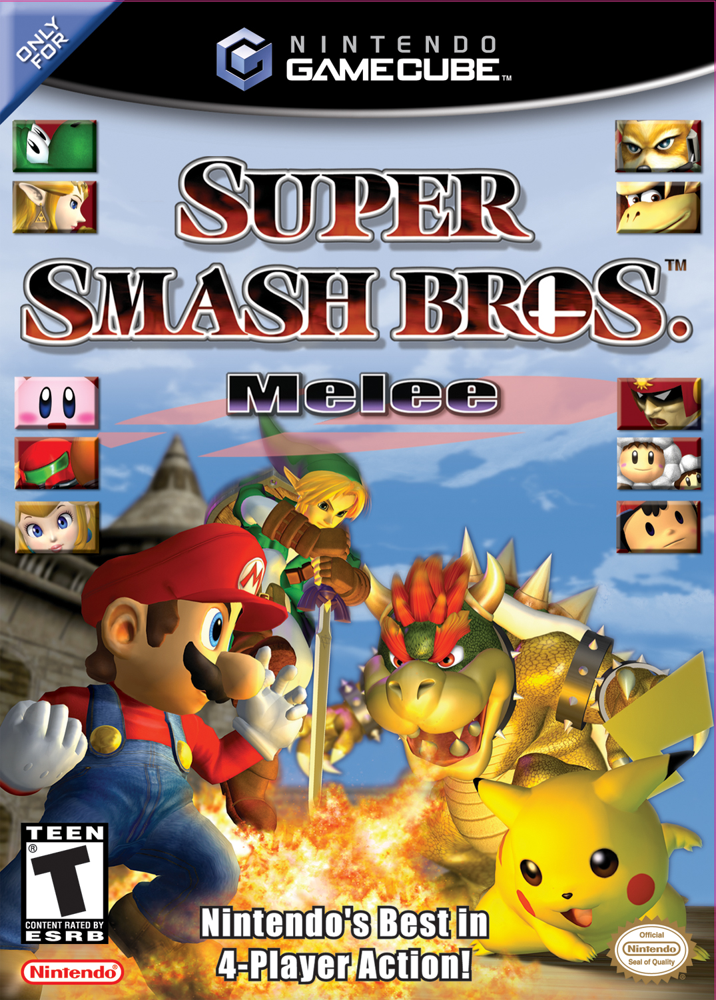

Competitive Super Smash Bros. MeleeSuper Smash Bros. Melee is a crossover platform fighting game released by Nintendo on the Nintendo GameCube on November 21, 2001. The competitive scene of the game has grew exponentially in recent years and has made multiple appearances at EVO, the largest fighting game tournament in the world, held every year in Las Vegas. Top players include the "five gods," Jason "Mew2King" Zimmerman, Adam "Armada" Lingren, Joseph "Mang0" Marquez, Juan "Hungrybox" DeBiedma, and Kevin "PPMD" Nanney. There are others such as Justin "Plup" McGrath, William "Leffen" Hjelte, Jeffery "Axe" Williamson, and Masaya "aMSa" Chikamoto.
Watching videos on YouTubeYouTube is an online on demand and live streaming social network that lets people express themselves in video form. The videos available on the platform are varied and different, from cooking videos to gaming videos. This variety, paried with YouTube's support from its owner, Google, has let it become a worldwide phenomenon in the past decade.
Talking with friends on DiscordDiscord is a program that allows people to make servers with specific text and voice channels to communicate with others. It is mostly focused on gaming, recently even opening a store that is said to rival Steam. Servers are owned by many different groups, such as video game companies, professional players, eSports teams, or just friends who want to chat.